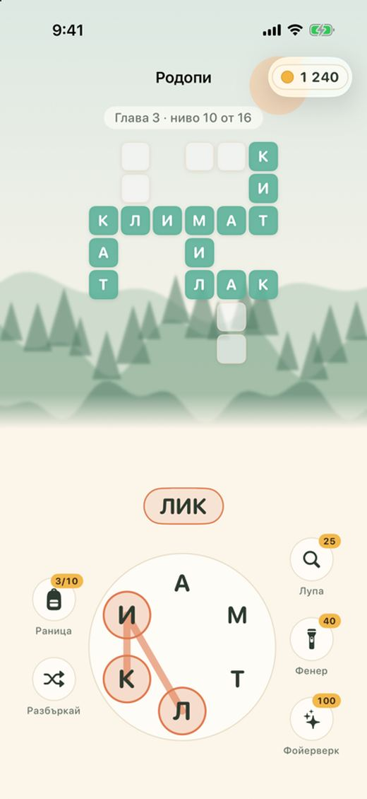

ДУМА
Игра на думи. На български.
Свържи буквите, подреди кръстословицата и пътувай от Родопите до Киото.
- Стотици нива с кръстословици от истински български думи
- Буквен спринт: 90 секунди, 16 букви, безброй думи
- Скрити „знаменитости“ – местни думи с любопитни факти
- Дневен пъзел, 100 медала и класации в Game Center
- Пет визуални стила, за iPhone, iPad и Mac
